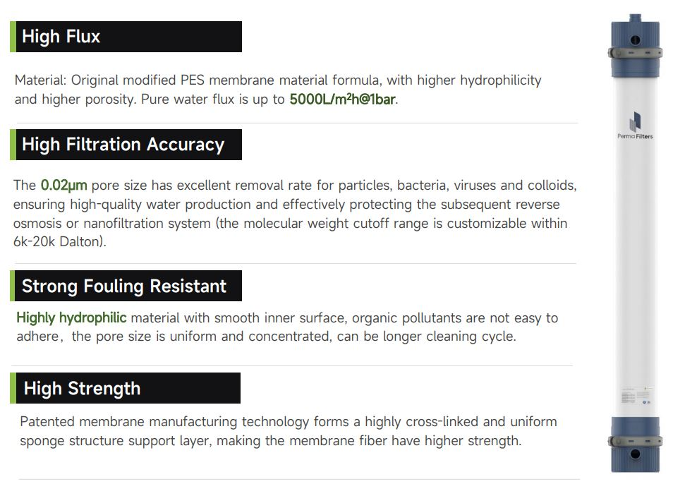

Perma Filter · 承信代理
UF 超濾膜
依原水過濾或廢水深度處理需求，選擇內壓式與外壓式 UF

產品在流程中的角色
Perma Filter UF 超濾膜
承信代理 Perma Filter UF 膜組件。內壓式 PES 系列可用於飲用水與製程用水處理；外壓式 PVDF 系列面向廢水深度處理與回用。UF 以膜過濾截留顆粒與膠體，各型號應依進水特性及後續處理需求確認選用條件。
- 內壓式 PES 與外壓式 PVDF 系列，依流程位置選型
- 用於顆粒與膠體截留，銜接後續處理單元
- 可洽詢 UF 新設或既有系統膜組件配置
Perma Filter 型號系列
共 4 筆型號／項目